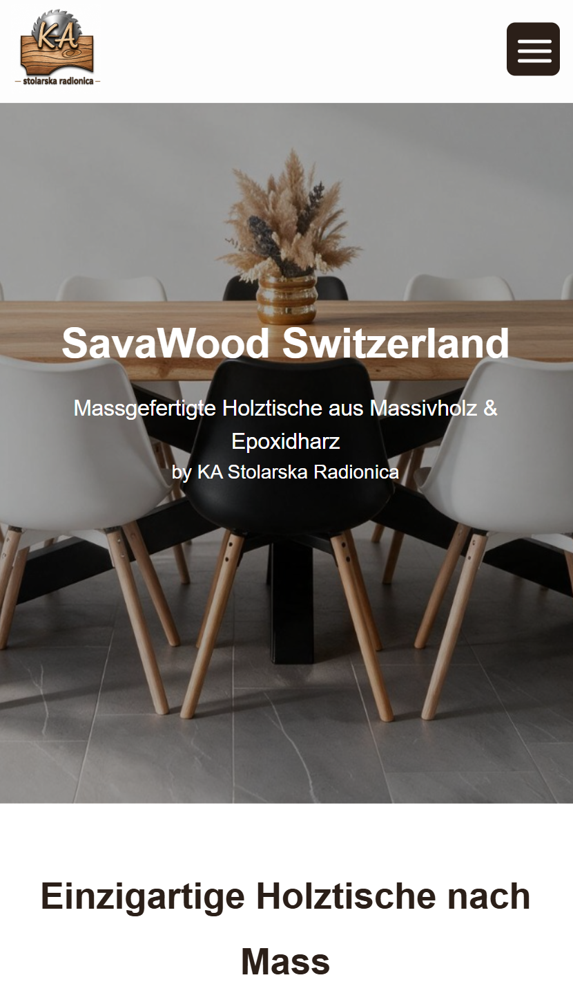

Vertrauen entsteht vor dem ersten Gespräch.
Bevor jemand anruft, eine Offerte verlangt oder Ihr Geschäft besucht, sieht er häufig zuerst Ihre Website. Genau dort muss Kompetenz sichtbar werden.
PROFESSIONELLES WEBDESIGN AUS DER OSTSCHWEIZ
Individuelle Websites für KMU und Handwerksbetriebe in St. Gallen, der Ostschweiz und der ganzen Schweiz – modern gestaltet, technisch sauber und auf jedem Gerät überzeugend.
Modern. Klar. Professionell.
01 / POSITIONIERUNG
Bevor jemand anruft, eine Offerte verlangt oder Ihr Geschäft besucht, sieht er häufig zuerst Ihre Website. Genau dort muss Kompetenz sichtbar werden.
Leistungen, Nutzen und Kontaktwege werden so strukturiert, dass Interessenten schnell verstehen, was Ihr Unternehmen anbietet und wie sie den nächsten Schritt machen können.
02 / LEISTUNGEN
Design, Technik und Nutzerführung aus einem Guss – ohne unnötigen Ballast.
Individuelle Gestaltung mit klarer visueller Hierarchie, hochwertiger Typografie und einer Benutzerführung, die Besucher gezielt durch Ihre Leistungen führt.
Ein konsistenter Auftritt auf Desktop, Tablet und Smartphone – schnell, stabil und sauber aufgebaut.
Saubere technische Grundlagen für Suchmaschinen und klare Kontaktwege, damit Interessenten ohne Umwege zur Anfrage gelangen.
WEBDESIGN AUS ST. GALLEN
Säntis Webdesign entwickelt moderne und individuell programmierte Websites für KMU, Handwerksbetriebe und Selbstständige in St. Gallen und der Ostschweiz. Der Fokus liegt auf professionellem Design, schnellen Ladezeiten, responsiver Darstellung und einer technisch sauberen Umsetzung.
Projekte können vollständig digital umgesetzt werden. Deshalb sind Webprojekte neben St. Gallen, Gossau, Wil, Rorschach, Wittenbach und Herisau auch für Unternehmen in der ganzen Schweiz möglich.
03 / AUSGEWÄHLTES PROJEKT
Für SavaWood Switzerland entstand ein vollständiger Webauftritt, der handgefertigte Massivholztische hochwertig präsentiert und Interessenten strukturiert bis zur Anfrage führt.
Hochwertige handgefertigte Produkte brauchten einen digitalen Auftritt, der Qualität, Individualität und Vertrauen sichtbar macht.
Individuelles Design, responsive Umsetzung, Produktkonfigurator und ein klarer Anfrageprozess wurden zu einer Website verbunden.
Interessenten können Produkte entdecken, konfigurieren und direkt eine unverbindliche Anfrage senden – auf jedem Gerät.


04 / ZUSAMMENARBEIT
Ein klarer Ablauf. Direkte Kommunikation. Keine unnötigen Agenturwege.
Wir klären Unternehmen, Ziele, Inhalte und was Ihre neue Website erreichen soll.
Struktur, visuelle Richtung und Benutzerführung werden passend zu Ihrem Auftritt entwickelt.
Das Design wird responsiv, performant und technisch sauber für alle Geräte umgesetzt.
Nach Tests und Feinschliff geht Ihre Website online und ist bereit für Besucher, Suchmaschinen und neue Anfragen.
05 / PERSÖNLICH
Mein Name ist Mato Matkovic. Ich entwickle Websites für Schweizer KMU, Handwerksbetriebe und kleinere Unternehmen. Dabei verbinde ich modernes Design mit technischem Verständnis und einer sauberen Umsetzung.
Sie sprechen vom ersten Gespräch bis zur Veröffentlichung direkt mit der Person, die Ihre Website entwickelt.
06 / IHR PROJEKT
Erzählen Sie mir kurz von Ihrem Unternehmen und Ihrem gewünschten Webauftritt. Die erste Kontaktaufnahme ist unverbindlich.
Oder direkt per E-Mail info@saentiswebdesign.ch